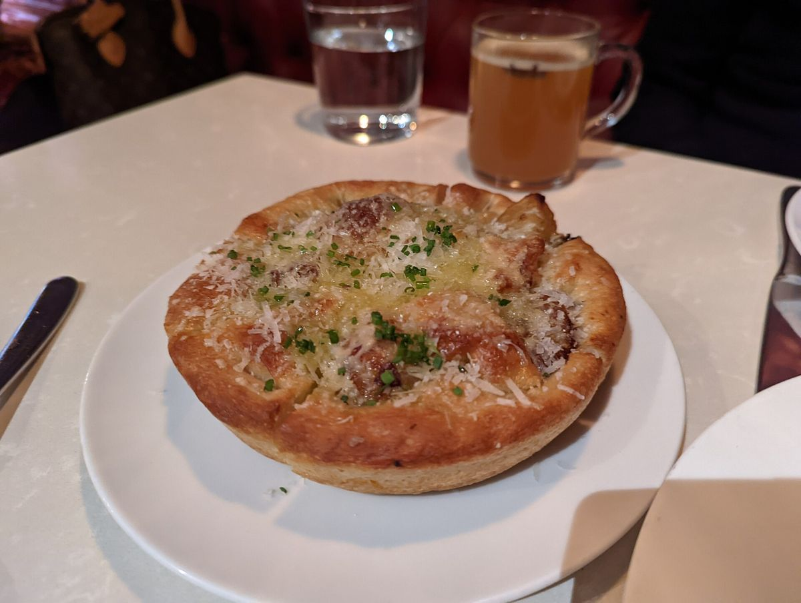
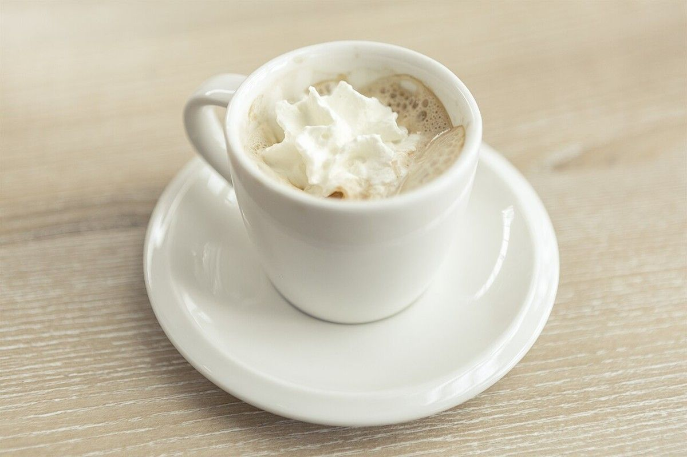
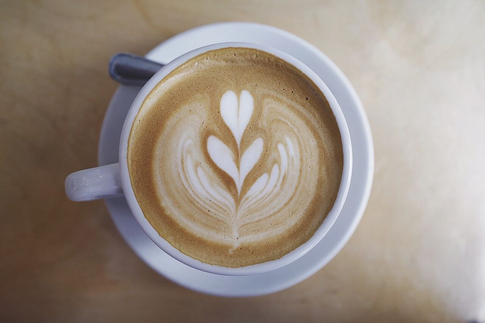

メニュー
準備中
メニュー・価格は準備中です。確認でき次第、掲載します。
品書き
掲載予定の枠
- 品名 1準備中価格 準備中
- 品名 2準備中価格 準備中
- 品名 3準備中価格 準備中
上の枠は表示例で、実際の品名・価格ではありません。
ギャラリー(イメージ)
パンのイメージ


写真はパンやコーヒーのイメージです。お店のものではなく、お店で提供している商品を示すものでもありません。
ギャラリー(イメージ)
層とカップのイメージ



写真はフリー素材のイメージで、お店の商品ではありません。